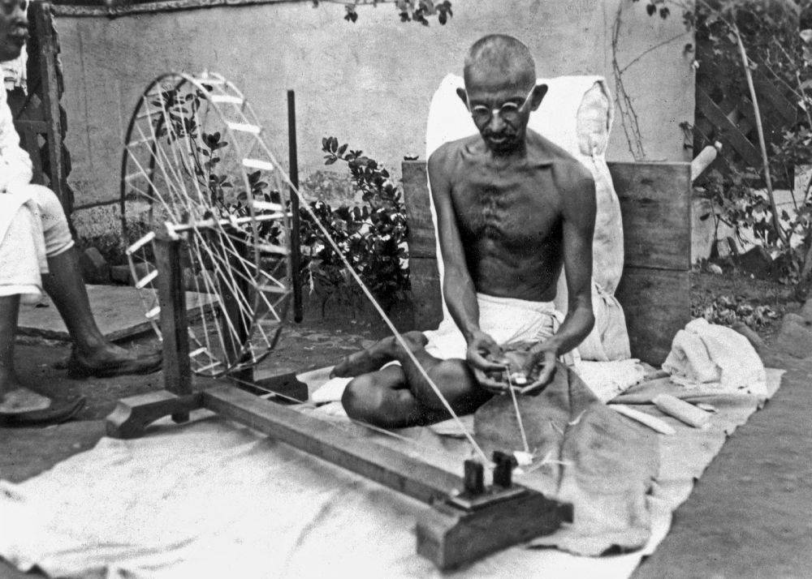

IL CHARKA, IL FILATOIO DI GANDHI
COS'È IL CHARKA
Il Charka era un filatoio manuale a ruota usato per filare cotone e seta che risale al VI sec. d.C. usata in India fino alla prima rivoluzione industriale. Con l'arrivo del colonialismo britannico perse di importanza in favore delle stoffe importate. Il Mahatma Gandhi lo consigliò a tutti gli indiani per l'uso casalingo allo scopo di intralciare il commercio delle stoffe inglesi e portare così all'indipendenza dell'India.
Nell'immagine si vede Gandhi che fila con la Charka nel 1946
